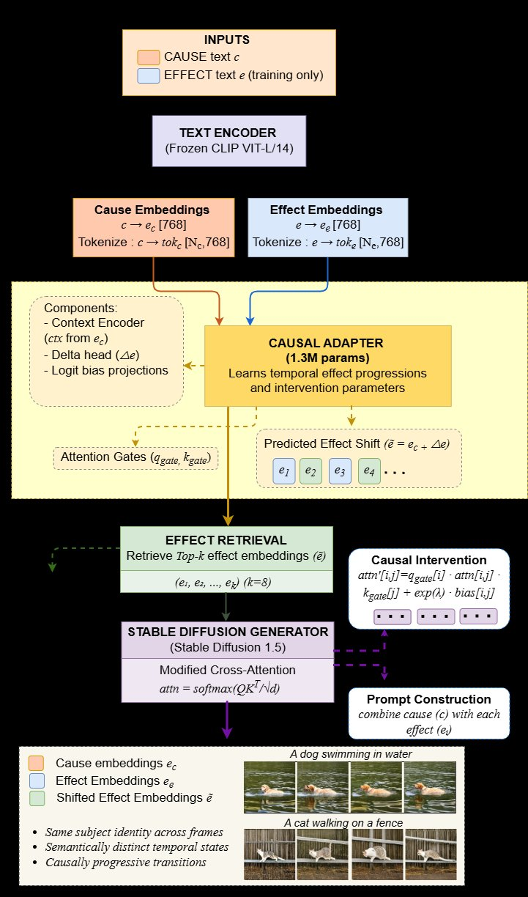
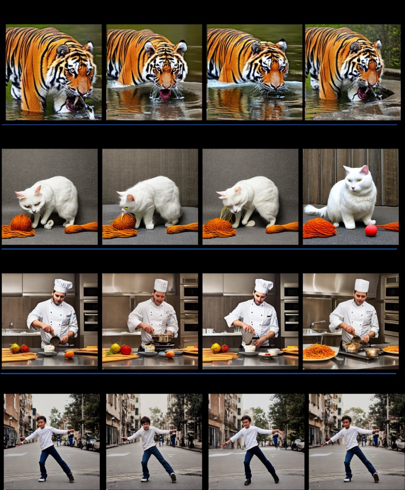

Temporal Image Generation through Causal Intervention Attention with Identity Preservation
IEEE International Conference on Multimedia and Expo (ICME) 2025
Text-to-image diffusion models generate photorealistic images but are not designed to produce temporally ordered image sequences that depict how events unfold while preserving subject identity. We introduce CausalDreamer, a framework for temporal image sequence generation that models semantic state progression through causal-inspired, intervention-guided diffusion attention.
Trained on CausalLite10K, a text-only dataset of 10,000 curated cause–effect pairs, a lightweight 1.3M-parameter adapter learns effect progression patterns in CLIP embedding space. A causal-inspired intervention mechanism modulates Stable Diffusion cross-attention to enable discrete temporal state transitions while maintaining identity consistency.
Given a single cause description, CausalDreamer retrieves temporally ordered effects and generates progressive image sequences. Across 190 scenarios, CausalDreamer achieves a favorable identity–diversity balance, delivering 4.7× higher semantic diversity than strong baselines while maintaining positive temporal ordering and cause–effect alignment.
A text-only dataset of 10,000 curated cause–effect pairs spanning 5,131 unique temporal effects, enabling scalable learning without paired visual supervision.
Lightweight 1.3M-parameter module that learns temporal effect progressions in CLIP embedding space with causal-inspired intervention attention.
Achieves favorable identity–diversity balance with consistently positive temporal ordering across 190 scenarios, outperforming strong baselines.

Figure 1: CausalDreamer architecture. The causal adapter learns temporal effect progressions in CLIP embedding space and generates intervention parameters (gates, bias) that modulate Stable Diffusion's cross-attention, enabling identity-preserving temporal generation.
CausalDreamer preserves identity while producing meaningful temporal progression via causal intervention attention.
Figure 2: Qualitative comparison on identity-preserving temporal generation. Each method is conditioned on identical text prompts. Top: Child playing with a ball. Bottom: Dog digging a hole. Stable Diffusion and SDXL fail to preserve identity. ControlNet and InstructPix2Pix maintain identity but exhibit limited temporal variation. AnimateDiff produces coherent motion but weak semantic state progression. CausalDreamer preserves identity while producing meaningful temporal progression.
Demonstration of generalization across wildlife, domestic animals, and human subjects.

Figure 3: Additional temporal sequences generated by CausalDreamer. Top to Bottom: Tiger drinking water, cat playing with yarn, chef cooking in kitchen, and person dancing in street. All sequences maintain subject identity while generating semantically distinct temporal states.
Evaluation on 190 temporal scenarios demonstrates strong performance across multiple metrics.
| Model | CLIP↑ | CCS↑ | SDS↑ | DINO-TCS↑ | IDS↑ |
|---|---|---|---|---|---|
| Stable Diffusion | 0.292 | -0.004 | 0.195 | 0.474 | 0.092 |
| InstructPix2Pix | 0.263 | -0.035 | 0.126 | 0.846 | 0.107 |
| ControlNet | 0.285 | -0.001 | 0.052 | 0.919 | 0.048 |
| AnimateDiff | 0.285 | -0.002 | 0.085 | 0.792 | 0.067 |
| CausalDreamer | 0.303 | 0.311 | 0.246 | 0.625 | 0.154 |
@inproceedings{causaldreamer2025,
title={CausalDreamer: Temporal Image Generation through Causal Intervention Attention with Identity Preservation},
author={Anonymous},
booktitle={IEEE International Conference on Multimedia and Expo (ICME)},
year={2025}
}